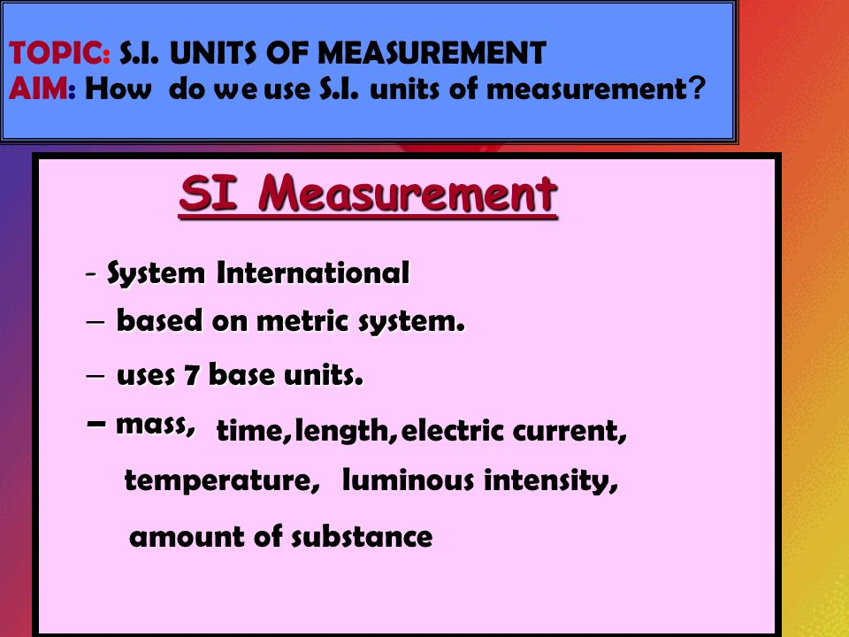
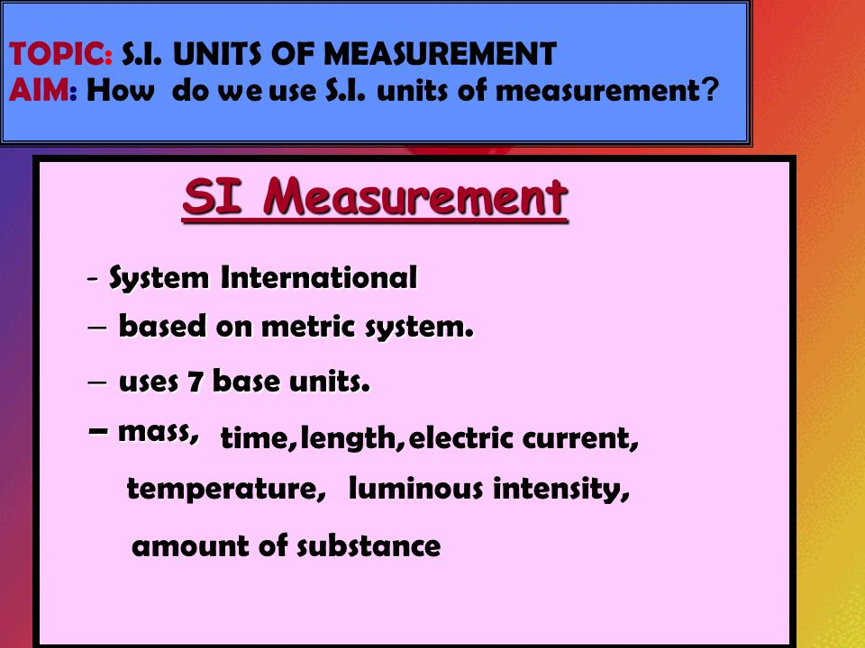

The SI System of Units
The standard system of measurement worldwide
Introduction
The International System of Units (SI) is the modern metric system that is widely used in scientific, industrial, and everyday measurements around the world. It provides a universal standard for measuring quantities such as length, mass, time, electric current, temperature, and others. The SI system was established to promote standardization across various fields of study and industries.
.svg.png) 

The Seven SI Base Units
- Meter (m) - The unit of length, defined as the distance light travels in a vacuum in 1/299,792,458 seconds.
- Kilogram (kg) - The unit of mass, now defined by the Planck constant (6.62607015×10^-34 m² kg/s).
- Second (s) - The unit of time, defined by the oscillations of a cesium-133 atom.
- Ampere (A) - The unit of electric current, defined using the force between two conductors carrying current.
- Kelvin (K) - The unit of temperature, based on the thermodynamic temperature of the triple point of water.
- Mole (mol) - The unit of amount of substance, defined by the number of entities (atoms, molecules) in 12 grams of carbon-12.
- Candela (cd) - The unit of luminous intensity, defined by the brightness of light at a specific wavelength emitted by a source.
Key Concepts
The SI system is based on physical constants that are universal, ensuring accurate and reproducible measurements. Its base units are interconnected and used to derive many other units in science and technology. Below are some of the key concepts:
- Base Units: These are the foundation of the system and include units like the meter for length and kilogram for mass.
- Derived Units: Units derived from the base units, such as meters per second (m/s) for velocity, or newtons (N) for force.
- SI Prefixes: Prefixes like kilo- (k), milli- (m), and centi- (c) are used to represent multiples and submultiples of base units.
History of the SI System
The SI system traces its roots back to the French Revolution when the metric system was introduced in the late 18th century. The goal was to create a universal and coherent system of measurement. Over time, this system evolved, with the International System of Units being established in 1960, and further refinements were made to improve accuracy and precision.